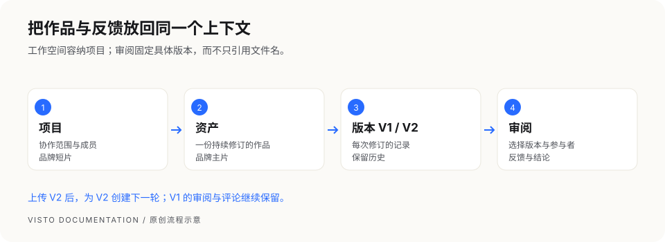

VISTO USER GUIDE / 01
先理解 Visto
Visto 在你控制的电脑或服务器上运行，用浏览器进入工作空间。它把项目、媒体文件、不同版本、审阅反馈和分享记录放在同一条协作流程里。存储可以位于部署主机，也可以由 Owner 连接 WebDAV 或 S3 兼容服务。
“本地优先”意味着你决定数据部署在哪里。选择远程存储、配置外部通知或开放远程访问后，相关数据仍会经过你启用的服务和网络。
五个最常用的概念
| 概念 | 用来做什么 | 例子 |
|---|---|---|
| 工作空间 | 容纳账号、项目、全局设置和基础设施 | 一个制作团队 |
| 项目 | 划定协作范围、成员和文件保存位置 | 品牌短片 · 10 月交付 |
| 媒体 / 资产 | 一份持续修订的作品或素材 | 品牌短片主片 |
| 版本 | 保留同一资产的每次上传结果 | V1 初剪、V2 调色、V3 确认版 |
| 审阅 | 围绕选定版本发起的一轮反馈与结论 | 第一轮导演审阅 |


图解： 一个项目可以有多个资产；一个资产可以有多个版本；审阅引用选定的版本。上传新版以后，旧审阅仍保留原来审阅的版本，下一轮应明确选择新版。
按身份选择阅读路线
| 你的身份 | 先读哪些章节 | 你最需要知道的事 |
|---|---|---|
| 安装维护者 | 安装准备 → 对应平台安装 → 媒体运行时 → 备份恢复 | 主机操作在部署机器执行，需要相应系统权限 |
| Owner | 首次设置 → 存储 → 成员权限 → 网络安全 | 管理全局基础设施，不要把 Owner 密码当团队共享密码 |
| 项目主管 | 创建项目 → 成员权限 → 审阅 → 归档 | 项目成员关系和具体权限决定协作边界 |
| 项目成员 | 上传素材 → 版本 → 审阅 → 通知 | 先进入正确项目，再上传和创建审阅 |
| 外部审阅者 | 外部审阅指南 | 使用分享链接和访问码，按开放权限查看、评论或下载 |
适用与限制
本手册适用于 Visto Server 1.0.3。从正式发布页下载对应平台安装包、同名 SHA-256 与完整交付材料，核对完整摘要后再安装。视频组件另按对应平台步骤取得；Windows 包已经包含视频组件。正式版本发布不等于 stable 更新提示已切换。
macOS 系统服务正常卸载与数据保留已补验；历史首装、媒体和重启结果按变更复用。Linux ARM64 的 Rocky 8 兼容补验使用模拟客体；Docker x64 宿主整机重启未验；其他结果和已知限制见发布说明。不要将选定客体的通过扩大成所有硬件或发行版都通过。
| 交付 | 固定下载 | 摘要文件 |
|---|---|---|
| Mac M 系列 | macOS ARM64 安装包 | SHA-256 |
| Windows x64 | Windows ZIP | SHA-256 |
| Linux x86_64 | Linux amd64 安装包 | SHA-256 |
| Linux ARM64 | Linux arm64 安装包 | SHA-256 |
| 手册、公钥、源码及 Docker 构建材料 | 完整公开交付 ZIP | SHA-256 |
升级维护脚本需要的 1.0.3 版本清单只用于明确选择这个此版本的维护者，不改变在线 stable 指针。
完整公开交付解压后包含 docs/USER_GUIDE.md、网页及离线手册、keys/media-runtime-root-public-key.txt、Dockerfile、compose.yaml、配套配置和维护工具。Docker 可以按第 09 章从完整源码构建两种架构；此入口不承诺已有公开预构建镜像。部署和首次构建仍需下载固定依赖及对应的视频组件，无需访问内部仓库。